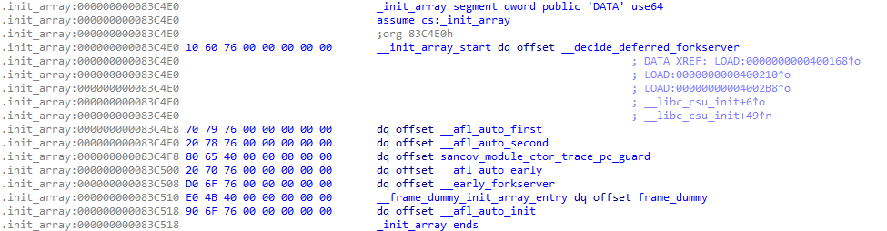

AFL++ Source Code Reading II - Forkserver
本文从主逻辑开始解析 AFL++ 源代码
afl-fuzz Entry
AFL++ (AFL) 主逻辑在 afl-fuzz.c, 模糊测试的启动程序为 afl-fuzz, 通常的启动命令
afl-fuzz -i [input_seed_corpus] -o [output_results] -- /path/to/target/binary [@@]
其中, @@ 是目标二进制程序读取的输入文件, 如果没有输入文件则默认从 stdin 输入.
启动流程
afl-fuzzfork 出子进程并执行目标二进制程序- fork 的子进程作为
forkserver继续 fork 子子进程 (fork 的性能成本比执行成本要低) - 子子进程执行 fuzzing
afl-fuzz 和 target binary 之间的通信使用 control pipe 和 status pipe 进行.
可见源代码: forkserver source code.
afl-fuzz 通过 control pipe 发送控制消息到 target binary, 反过来则是通过 status pipe. control pipe 的文件描述符是 FORKSRV_FD, 而 status pipe 的文件描述符是 FORKSRV_FD + 1.
if (dup2(ctl_pipe[0], FORKSRV_FD) < 0) { PFATAL("dup2() failed"); }
if (dup2(st_pipe[1], FORKSRV_FD + 1) < 0) { PFATAL("dup2() failed"); }
Instrumentation
ELF 二进制程序运行流程是先运行 .init_array 节中的初始化函数, 再到 main 函数 [3, 4]. 插桩后的二进制程序 .init_array 中的函数会有所区别, 方便起见这里列举初始化过程中, 常用的变量、环境变量和宏定义.
/* Regular Variables */
__afl_area_ptr // - The coverage map pointer. By default this is __afl_area_initial. The size of __afl_area_initial is MAP_INITIAL_SIZE (ref [5])
__afl_final_loc // - The last index in __afl_area_ptr accessed by instrumentation
__afl_map_addr // - This is the address that the coverage map will be mmap’d. As far as I know, this only really exists when AFL_LLVM_MAP_ADDR is set in LTO mode. Otherwise, it is 0.
__afl_map_size // - The size of the coverage map
__afl_area_initial // - The coverage map used before shared memory is mapped and if shared memory is not accessible (i.e. we are not running under AFL). This is created as an array in afl-compiler-rt.o.c
/* Environment Variables */
__AFL_SHM_ID // (Aliased to SHM_ENV_VAR) - Shared memory ID for the coverage map.
__AFL_SHM_FUZZ_ID // (Aliased to SHM_FUZZ_ENV_VAR) - Shared memory ID for shared memory fuzzing.
AFL_MAP_SIZE // - Used to set the size of the shared memory buffer allocated by afl-fuzz.
/* Macros */
MAP_SIZE // - a custom value that afl-fuzz can use to force the size of the shared memory map.
MAP_INITIAL_SIZE // - size of __afl_area_initial
经过 PCGUARD 插桩的二进制程序 .init_array 的函数表, 示例

其中, 所有插桩函数均可以在 afl-compiler-rt.o.c [5] 中找到定义. 逐个查看源码:
__afl_auto_first 设置变量 __afl_already_initialized_first = 1
__attribute__((constructor(0))) void __afl_auto_first(void) {
if (__afl_already_initialized_first) return;
__afl_already_initialized_first = 1;
if (getenv("AFL_DISABLE_LLVM_INSTRUMENTATION")) return;
/*
u8 *ptr = (u8 *)malloc(MAP_INITIAL_SIZE);
if (ptr && (ssize_t)ptr != -1) {
__afl_area_ptr = ptr;
__afl_area_ptr_backup = __afl_area_ptr;
}
*/
} // ptr memleak report is a false positive
__afl_auto_second 在 PCGUARD 模式下无作用, 因为初始化时 __afl_final_loc == 0
__attribute__((constructor(1))) void __afl_auto_second(void) {
if (__afl_already_initialized_second) return;
__afl_already_initialized_second = 1;
if (getenv("AFL_DEBUG")) {
__afl_debug = 1;
fprintf(stderr, "DEBUG: debug enabled\n");
fprintf(stderr, "DEBUG: AFL++ afl-compiler-rt" VERSION "\n");
}
if (getenv("AFL_DISABLE_LLVM_INSTRUMENTATION")) return;
u8 *ptr;
if (__afl_final_loc > MAP_INITIAL_SIZE) {
__afl_first_final_loc = __afl_final_loc + 1;
if (__afl_area_ptr && __afl_area_ptr != __afl_area_initial)
free(__afl_area_ptr);
if (__afl_map_addr)
ptr = (u8 *)mmap((void *)__afl_map_addr, __afl_first_final_loc,
PROT_READ | PROT_WRITE,
MAP_FIXED_NOREPLACE | MAP_SHARED | MAP_ANONYMOUS, -1, 0);
else
ptr = (u8 *)malloc(__afl_first_final_loc);
if (ptr && (ssize_t)ptr != -1) {
__afl_area_ptr = ptr;
__afl_area_ptr_dummy = __afl_area_ptr;
__afl_area_ptr_backup = __afl_area_ptr;
}
}
} // ptr memleak report is a false positive
sancov_module_ctor_trace_pc_guard 跟进会发现其调用 __sanitizer_cov_trace_pc_guard_init. 其接收编译文件中所有插桩点的 start 和 stop 两个参数, 初始化覆盖率映射表, 为每个插桩点分配唯一的 ID (__afl_final_loc), 根据 inst_ratio 决定是否跳过某些插桩点 (跳过时写0).
void __sanitizer_cov_trace_pc_guard_init(uint32_t *start, uint32_t *stop) {
u32 inst_ratio = 100;
char *x;
_is_sancov = 1;
if (!getenv("AFL_DUMP_MAP_SIZE")) {
__afl_auto_first();
__afl_auto_second();
__afl_auto_early();
}
if (__afl_debug) {
fprintf(
stderr,
"DEBUG: Running __sanitizer_cov_trace_pc_guard_init: %p-%p (%lu edges) "
"after_fs=%u *start=%u\n",
start, stop, (unsigned long)(stop - start),
__afl_already_initialized_forkserver, *start);
}
if (start == stop || *start) { return; }
#ifdef __AFL_CODE_COVERAGE
...
#endif // __AFL_CODE_COVERAGE
x = getenv("AFL_INST_RATIO");
if (x) {
inst_ratio = (u32)atoi(x);
if (!inst_ratio || inst_ratio > 100) {
fprintf(stderr, "[-] ERROR: Invalid AFL_INST_RATIO (must be 1-100).\n");
abort();
}
}
// If a dlopen of an instrumented library happens after the forkserver then
// we have a problem as we cannot increase the coverage map anymore.
if (__afl_already_initialized_forkserver) {
if (!getenv("AFL_IGNORE_PROBLEMS")) {
fprintf(
stderr,
"[-] FATAL: forkserver is already up, but an instrumented dlopen() "
"library loaded afterwards. You must AFL_PRELOAD such libraries to "
"be able to fuzz them or LD_PRELOAD to run outside of afl-fuzz.\n"
"To ignore this set AFL_IGNORE_PROBLEMS=1 but this will lead to "
"ambiguous coverage data.\n"
"In addition, you can set AFL_IGNORE_PROBLEMS_COVERAGE=1 to "
"ignore the additional coverage instead (use with caution!).\n");
abort();
} else {
u8 ignore_dso_after_fs = !!getenv("AFL_IGNORE_PROBLEMS_COVERAGE");
if (__afl_debug && ignore_dso_after_fs) {
fprintf(stderr,
"DEBUG: Ignoring coverage from dynamically loaded code\n");
}
static u32 offset = 5;
while (start < stop) {
if (!ignore_dso_after_fs &&
(likely(inst_ratio == 100) || R(100) < inst_ratio)) {
*(start++) = offset;
} else {
*(start++) = 0; // write to map[0]
}
if (unlikely(++offset >= __afl_final_loc)) { offset = 5; }
}
}
return; // we are done for this special case
}
/* Make sure that the first element in the range is always set - we use that
to avoid duplicate calls (which can happen as an artifact of the underlying
implementation in LLVM). */
if (__afl_final_loc < 4) __afl_final_loc = 4; // we skip the first 5 entries
*(start++) = ++__afl_final_loc;
while (start < stop) {
if (likely(inst_ratio == 100) || R(100) < inst_ratio) {
*(start++) = ++__afl_final_loc;
} else {
*(start++) = 0; // write to map[0]
}
}
#ifdef __AFL_CODE_COVERAGE
...
#endif // __AFL_CODE_COVERAGE
if (__afl_debug) {
fprintf(stderr,
"DEBUG: Done __sanitizer_cov_trace_pc_guard_init: __afl_final_loc "
"= %u\n",
__afl_final_loc);
}
if (__afl_already_initialized_shm) {
if (__afl_final_loc > __afl_map_size) {
if (__afl_debug) {
fprintf(stderr, "DEBUG: Reinit shm necessary (+%u)\n",
__afl_final_loc - __afl_map_size);
}
__afl_unmap_shm();
__afl_map_shm();
}
__afl_map_size = __afl_final_loc + 1;
}
}
__afl_auto_early 调用 __afl_map_shm 创建一个共享内存 (shared memory) 实例作为覆盖率映射表 (coverage map), 主进程就可以看到所有子进程修改的覆盖率结果. 具体细节, 跳过边界条件逻辑, 看主逻辑代码的注释.
__attribute__((constructor(CTOR_PRIO))) void __afl_auto_early(void) {
if (__afl_already_initialized_early) return;
__afl_already_initialized_early = 1;
is_persistent = !!getenv(PERSIST_ENV_VAR);
if (getenv("AFL_DISABLE_LLVM_INSTRUMENTATION")) return;
__afl_map_shm();
}
static void __afl_map_shm(void) {
if (__afl_already_initialized_shm) return;
__afl_already_initialized_shm = 1;
// if we are not running in afl ensure the map exists
if (!__afl_area_ptr) { __afl_area_ptr = __afl_area_ptr_dummy; }
char *id_str = getenv(SHM_ENV_VAR); // get the shared memory ID
if (__afl_final_loc) {
__afl_map_size = __afl_final_loc + 1; // as we count starting 0
if (getenv("AFL_DUMP_MAP_SIZE")) {
printf("%u\n", __afl_map_size);
exit(-1);
}
if (__afl_debug) {
fprintf(stderr, "DEBUG: AFL_MAP_SIZE=%u\n", __afl_map_size);
}
if (__afl_final_loc > MAP_SIZE) { // expand the shared memory to fill in all edges
char *ptr;
u32 val = 0;
if ((ptr = getenv("AFL_MAP_SIZE")) != NULL) { val = atoi(ptr); }
if (val < __afl_final_loc) {
if (__afl_final_loc > MAP_INITIAL_SIZE && !getenv("AFL_QUIET")) {
fprintf(stderr,
"Warning: AFL++ tools might need to set AFL_MAP_SIZE to %u "
"to be able to run this instrumented program if this "
"crashes!\n",
__afl_final_loc);
}
}
}
}
if (__afl_sharedmem_fuzzing && (!id_str || !getenv(SHM_FUZZ_ENV_VAR) ||
fcntl(FORKSRV_FD, F_GETFD) == -1 ||
fcntl(FORKSRV_FD + 1, F_GETFD) == -1)) {
if (__afl_debug) {
fprintf(stderr,
"DEBUG: running not inside afl-fuzz, disabling shared memory "
"testcases\n");
}
__afl_sharedmem_fuzzing = 0;
}
if (!id_str) {
u32 val = 0;
u8 *ptr;
if ((ptr = getenv("AFL_MAP_SIZE")) != NULL) { val = atoi(ptr); }
if (val > MAP_INITIAL_SIZE && val > __afl_final_loc) {
__afl_map_size = val;
} else {
if (__afl_first_final_loc > MAP_INITIAL_SIZE) {
// done in second stage constructor
__afl_map_size = __afl_first_final_loc;
} else {
__afl_map_size = MAP_INITIAL_SIZE;
}
}
if (__afl_map_size > MAP_INITIAL_SIZE && __afl_final_loc < __afl_map_size) {
__afl_final_loc = __afl_map_size;
}
if (__afl_debug) {
fprintf(stderr, "DEBUG: (0) init map size is %u to %p\n", __afl_map_size,
__afl_area_ptr_dummy);
}
}
/* If we're running under AFL, attach to the appropriate region, replacing the
early-stage __afl_area_initial region that is needed to allow some really
hacky .init code to work correctly in projects such as OpenSSL. */
if (__afl_debug) {
fprintf(stderr,
"DEBUG: (1) id_str %s, __afl_area_ptr %p, __afl_area_initial %p, "
"__afl_area_ptr_dummy %p, __afl_map_addr 0x%llx, MAP_SIZE %u, "
"__afl_final_loc %u, __afl_map_size %u\n",
id_str == NULL ? "<null>" : id_str, __afl_area_ptr,
__afl_area_initial, __afl_area_ptr_dummy, __afl_map_addr, MAP_SIZE,
__afl_final_loc, __afl_map_size);
}
if (id_str) {
if (__afl_area_ptr && __afl_area_ptr != __afl_area_initial &&
__afl_area_ptr != __afl_area_ptr_dummy) {
if (__afl_map_addr) {
munmap((void *)__afl_map_addr, __afl_final_loc);
} else {
free(__afl_area_ptr);
}
__afl_area_ptr = __afl_area_ptr_dummy;
}
#ifdef USEMMAP
...
#else
u32 shm_id = atoi(id_str);
if (__afl_map_size && __afl_map_size > MAP_SIZE) {
u8 *map_env = (u8 *)getenv("AFL_MAP_SIZE");
if (!map_env || atoi((char *)map_env) < MAP_SIZE) {
fprintf(stderr, "FS_ERROR_MAP_SIZE\n");
send_forkserver_error(FS_ERROR_MAP_SIZE);
_exit(1);
}
}
__afl_area_ptr = (u8 *)shmat(shm_id, (void *)__afl_map_addr, 0);
// point __afl_area_ptr to shared memory so that instrumentation
// can access to shared memory and change coverage map
/* Whooooops. */
if (!__afl_area_ptr || __afl_area_ptr == (void *)-1) {
if (__afl_map_addr)
send_forkserver_error(FS_ERROR_MAP_ADDR);
else
send_forkserver_error(FS_ERROR_SHMAT);
perror("shmat for map");
_exit(1);
}
#endif
/* Write something into the bitmap so that even with low AFL_INST_RATIO,
our parent doesn't give up on us. */
__afl_area_ptr[0] = 1;
} else if ((!__afl_area_ptr || __afl_area_ptr == __afl_area_initial) &&
__afl_map_addr) {
__afl_area_ptr = (u8 *)mmap(
(void *)__afl_map_addr, __afl_map_size, PROT_READ | PROT_WRITE,
MAP_FIXED_NOREPLACE | MAP_SHARED | MAP_ANONYMOUS, -1, 0);
if (__afl_area_ptr == MAP_FAILED) {
fprintf(stderr, "can not acquire mmap for address %p\n",
(void *)__afl_map_addr);
send_forkserver_error(FS_ERROR_SHM_OPEN);
exit(1);
}
} else if (__afl_final_loc > MAP_INITIAL_SIZE &&
__afl_final_loc > __afl_first_final_loc) {
if (__afl_area_initial != __afl_area_ptr_dummy) {
free(__afl_area_ptr_dummy);
}
__afl_map_size = __afl_final_loc + 1;
__afl_area_ptr_dummy = (u8 *)malloc(__afl_map_size);
__afl_area_ptr = __afl_area_ptr_dummy;
if (!__afl_area_ptr_dummy) {
fprintf(stderr,
"Error: AFL++ could not acquire %u bytes of memory, exiting!\n",
__afl_final_loc);
exit(-1);
}
} // else: nothing to be done
__afl_area_ptr_backup = __afl_area_ptr;
if (__afl_debug) {
fprintf(stderr,
"DEBUG: (2) id_str %s, __afl_area_ptr %p, __afl_area_initial %p, "
"__afl_area_ptr_dummy %p, __afl_map_addr 0x%llx, MAP_SIZE "
"%u, __afl_final_loc %u, __afl_map_size %u\n",
id_str == NULL ? "<null>" : id_str, __afl_area_ptr,
__afl_area_initial, __afl_area_ptr_dummy, __afl_map_addr, MAP_SIZE,
__afl_final_loc, __afl_map_size);
}
if (__afl_selective_coverage) {
if (__afl_map_size > MAP_INITIAL_SIZE) {
__afl_area_ptr_dummy = (u8 *)malloc(__afl_map_size);
}
if (__afl_area_ptr_dummy) {
if (__afl_selective_coverage_start_off) {
__afl_area_ptr = __afl_area_ptr_dummy;
}
} else {
fprintf(stderr, "Error: __afl_selective_coverage failed!\n");
__afl_selective_coverage = 0;
// continue;
}
}
id_str = getenv(CMPLOG_SHM_ENV_VAR);
if (__afl_debug) {
fprintf(stderr, "DEBUG: cmplog id_str %s\n",
id_str == NULL ? "<null>" : id_str);
}
if (id_str) {
// /dev/null doesn't work so we use /dev/urandom
if ((__afl_dummy_fd[1] = open("/dev/urandom", O_WRONLY)) < 0) {
if (pipe(__afl_dummy_fd) < 0) { __afl_dummy_fd[1] = 1; }
}
#ifdef USEMMAP
...
#else
u32 shm_id = atoi(id_str);
__afl_cmp_map = (struct cmp_map *)shmat(shm_id, NULL, 0);
#endif
__afl_cmp_map_backup = __afl_cmp_map;
if (!__afl_cmp_map || __afl_cmp_map == (void *)-1) {
perror("shmat for cmplog");
send_forkserver_error(FS_ERROR_SHM_OPEN);
_exit(1);
}
}
#ifdef __AFL_CODE_COVERAGE
...
#endif // __AFL_CODE_COVERAGE
if (!__afl_cmp_map && getenv("AFL_CMPLOG_DEBUG")) {
__afl_cmp_map_backup = __afl_cmp_map = malloc(sizeof(struct cmp_map));
}
if (getenv("AFL_CMPLOG_MAX_LEN")) {
int tmp = atoi(getenv("AFL_CMPLOG_MAX_LEN"));
if (tmp >= 16 && tmp <= 32) { __afl_cmplog_max_len = tmp; }
}
}
Forkserver
__early_forkserver 只是调用 __afl_auto_init
__attribute__((constructor(EARLY_FS_PRIO))) void __early_forkserver(void) {
if (getenv("AFL_EARLY_FORKSERVER")) { __afl_auto_init(); }
}
__afl_auto_init 会调用 __afl_manual_init -> __afl_start_forkserver.
最终, forkserver 模式的 fuzzing 由 __afl_start_forkserver 函数启动, 主逻辑见 while(1) 中的注释
__attribute__((constructor())) void __afl_auto_init(void) {
if (__afl_already_initialized_init) { return; }
#ifdef __ANDROID__
...
#endif
__afl_already_initialized_init = 1;
if (getenv("AFL_DISABLE_LLVM_INSTRUMENTATION")) return;
if (getenv(DEFER_ENV_VAR)) return;
__afl_manual_init();
}
void __afl_manual_init(void) {
static u8 init_done;
if (getenv("AFL_DISABLE_LLVM_INSTRUMENTATION")) {
init_done = 1;
is_persistent = 0;
__afl_sharedmem_fuzzing = 0;
if (__afl_area_ptr == NULL) __afl_area_ptr = __afl_area_ptr_dummy;
if (__afl_debug) {
fprintf(stderr,
"DEBUG: disabled instrumentation because of "
"AFL_DISABLE_LLVM_INSTRUMENTATION\n");
}
}
if (!init_done) {
__afl_start_forkserver();
init_done = 1;
}
}
/* Fork server logic. */
static void __afl_start_forkserver(void) {
if (__afl_already_initialized_forkserver) return;
__afl_already_initialized_forkserver = 1;
struct sigaction orig_action;
sigaction(SIGTERM, NULL, &orig_action);
old_sigterm_handler = orig_action.sa_handler;
signal(SIGTERM, at_exit);
u32 already_read_first = 0;
u32 was_killed = 0;
u32 version = 0x41464c00 + FS_NEW_VERSION_MAX;
u32 tmp = version ^ 0xffffffff, status2, status = version;
u8 *msg = (u8 *)&status;
u8 *reply = (u8 *)&status2;
u8 child_stopped = 0;
void (*old_sigchld_handler)(int) = signal(SIGCHLD, SIG_DFL);
if (getenv("AFL_OLD_FORKSERVER")) {
__afl_old_forkserver = 1;
status = 0;
if (__afl_final_loc > MAP_SIZE) {
fprintf(stderr,
"Warning: AFL_OLD_FORKSERVER is used with a target compiled with "
"non-colliding coverage instead of AFL_LLVM_INSTRUMENT=CLASSIC - "
"this target may crash!\n");
}
}
/* Phone home and tell the parent that we're OK. If parent isn't there,
assume we're not running in forkserver mode and just execute program. */
if (!__afl_old_forkserver) {
// return because possible non-forkserver usage
if (write(FORKSRV_FD + 1, msg, 4) != 4) { return; }
if (read(FORKSRV_FD, reply, 4) != 4) { _exit(1); }
if (tmp != status2) {
write_error("wrong forkserver message from AFL++ tool");
_exit(1);
}
// send the set/requested options to forkserver
status = FS_NEW_OPT_MAPSIZE; // we always send the map size
if (__afl_sharedmem_fuzzing) { status |= FS_NEW_OPT_SHDMEM_FUZZ; }
if (__afl_dictionary_len && __afl_dictionary) {
status |= FS_NEW_OPT_AUTODICT;
}
if (write(FORKSRV_FD + 1, msg, 4) != 4) { _exit(1); }
// Now send the parameters for the set options, increasing by option number
// FS_NEW_OPT_MAPSIZE - we always send the map size
status = __afl_map_size;
if (write(FORKSRV_FD + 1, msg, 4) != 4) { _exit(1); }
// FS_NEW_OPT_SHDMEM_FUZZ - no data
// FS_NEW_OPT_AUTODICT - send autodictionary
if (__afl_dictionary_len && __afl_dictionary) {
// pass the dictionary through the forkserver FD
u32 len = __afl_dictionary_len, offset = 0;
if (write(FORKSRV_FD + 1, &len, 4) != 4) {
write(2, "Error: could not send dictionary len\n",
strlen("Error: could not send dictionary len\n"));
_exit(1);
}
while (len != 0) {
s32 ret;
ret = write(FORKSRV_FD + 1, __afl_dictionary + offset, len);
if (ret < 1) {
write_error("could not send dictionary");
_exit(1);
}
len -= ret;
offset += ret;
}
}
// send welcome message as final message
status = version;
if (write(FORKSRV_FD + 1, msg, 4) != 4) { _exit(1); }
}
// END forkserver handshake
__afl_connected = 1;
if (__afl_sharedmem_fuzzing) { __afl_map_shm_fuzz(); }
while (1) {
int status;
/* Wait for parent by reading from the pipe. Abort if read fails. */
if (unlikely(already_read_first)) {
already_read_first = 0;
} else {
if (unlikely(read(FORKSRV_FD, &was_killed, 4) != 4)) {
write_error("read from AFL++ tool");
_exit(1);
}
}
#ifdef _AFL_DOCUMENT_MUTATIONS
...
#endif
/* If we stopped the child in persistent mode, but there was a race
condition and afl-fuzz already issued SIGKILL, write off the old
process. */
if (unlikely(child_stopped && was_killed)) {
child_stopped = 0;
if (unlikely(waitpid(child_pid, &status, 0) < 0)) {
write_error("child_stopped && was_killed");
_exit(1);
}
}
if (unlikely(!child_stopped)) {
/* Once woken up, create a clone of our process. */
child_pid = fork(); // fork child process to grand child and execute
if (unlikely(child_pid < 0)) {
write_error("fork");
_exit(1);
}
/* In child process: close fds, resume execution. */
// fork returns 0 to child and child_pid to parent
if (unlikely(!child_pid)) { // just to signal afl-fuzz faster
//(void)nice(-20);
// reset signal handlers
signal(SIGCHLD, old_sigchld_handler);
signal(SIGTERM, old_sigterm_handler);
// close pipes
close(FORKSRV_FD);
close(FORKSRV_FD + 1);
return; // return to main
}
} else {
/* Special handling for persistent mode: if the child is alive but
currently stopped, simply restart it with SIGCONT. */
kill(child_pid, SIGCONT);
child_stopped = 0;
}
/* In parent process: write PID to pipe, then wait for child. */
// send the grandchild_pid to parent
if (unlikely(write(FORKSRV_FD + 1, &child_pid, 4) != 4)) {
write_error("write to afl-fuzz");
_exit(1);
}
// wait for child process finishing
if (unlikely(waitpid(child_pid, &status, is_persistent ? WUNTRACED : 0) <
0)) {
write_error("waitpid");
_exit(1);
}
/* In persistent mode, the child stops itself with SIGSTOP to indicate
a successful run. In this case, we want to wake it up without forking
again. */
if (likely(WIFSTOPPED(status))) { child_stopped = 1; }
/* Relay wait status to pipe, then loop back. */
// send completed message to parent for further fuzzing
if (unlikely(write(FORKSRV_FD + 1, &status, 4) != 4)) {
write_error("writing to afl-fuzz");
_exit(1);
}
}
}
Persistent Mode
比 forkserver 更快的持久化模式 (persistent mode) 用于高效测试代码片段. 持久化模式通过一个循环来反复调用目标函数/代码, 而不必每次输入都要 fork 子进程, 因此可以 10x - 20x 倍提高效率. 持久化模式代码示例
#include "what_you_need_for_your_target.h"
main() {
// anything else here, e.g. command line arguments, initialization, etc.
unsigned char buf[1024];
while (__AFL_LOOP(10000)) { //loop
int len = read(0,buf,1024);
if (len < 8) continue; // check for a required/useful minimum input
target_function(buf, len);
memset(buf, 0, 1024); //reset the state
/* Reset state. e.g. libtarget_free(tmp) */
}
return 0;
}
相应地, forkserver 的等待子进程逻辑需要调整 (instrumentation/afl-compiler-rt.o.c)
if (unlikely(waitpid(child_pid, &status, is_persistent ? WUNTRACED : 0) < 0))
Shared Memory Fuzzing
将输入文件也存储到共享内存中, 可以进一步提高 fuzzing 效率, 称为 Shared Memory Fuzzing. 代码示例
#include "what_you_need_for_your_target.h"
__AFL_FUZZ_INIT();
main() {
// anything else here, e.g. command line arguments, initialization, etc.
unsigned char *buf = __AFL_FUZZ_TESTCASE_BUF; // must be after __AFL_INIT
// and before __AFL_LOOP!
while (__AFL_LOOP(10000)) {
int len = __AFL_FUZZ_TESTCASE_LEN; // don't use the macro directly in a
// call!
if (len < 8) continue; // check for a required/useful minimum input length
/* Setup function call, e.g. struct target *tmp = libtarget_init() */
/* Call function to be fuzzed, e.g.: */
target_function(buf, len);
/* Reset state. e.g. libtarget_free(tmp) */
}
return 0;
}
其中, __AFL_FUZZ_TESTCASE_BUF 是保存输入的共享内存缓冲区, 开启共享内存模糊测试的变量为 __afl_sharedmem_fuzzing, 调用 __AFL_FUZZ_INIT 时变量 __afl_sharedmem_fuzzing 也会被设置为 1. 只当 afl-clang-fast 插桩目标程序时, 下面 src/afl-cc.c 的 __AFL_FUZZ_INIT 宏定义才会编译时加入.
insert_param(aflcc,
"-D__AFL_FUZZ_INIT()="
"int __afl_sharedmem_fuzzing = 1;"
"extern __attribute__((visibility(\"default\"))) "
"unsigned int *__afl_fuzz_len;"
"extern __attribute__((visibility(\"default\"))) "
"unsigned char *__afl_fuzz_ptr;"
"unsigned char __afl_fuzz_alt[1048576];"
"unsigned char *__afl_fuzz_alt_ptr = __afl_fuzz_alt;");
[*] 更深入的理解 persistent mode 和 shared memory fuzzing
使用插桩器编译 utils/persistent_mode/persistent_demo_new.c, 然后用 IDAPro 对比分析差异.
afl-fuzz Main Logic
两个关键结构 afl_state_t 管理 fuzzer 的大部分参数 (mutator parameters, observers, feedbacks 等), 以及 afl_forkserver_t 管理 forkserver 相关的变量. afl_forkserver_t 嵌入在 afl_state_t 中. 定义见下:
typedef struct afl_state {
/* Position of this state in the global states list */
u32 _id;
afl_forkserver_t fsrv;
sharedmem_t shm;
sharedmem_t *shm_fuzz;
afl_env_vars_t afl_env;
char **argv; /* argv if needed */
/* MOpt:
Lots of globals, but mostly for the status UI and other things where it
really makes no sense to haul them around as function parameters. */
u64 orig_hit_cnt_puppet, last_limit_time_start, tmp_pilot_time,
total_pacemaker_time, total_puppet_find, temp_puppet_find, most_time_key,
most_time, most_execs_key, most_execs, old_hit_count, force_ui_update,
prev_run_time;
MOpt_globals_t mopt_globals_core, mopt_globals_pilot;
s32 limit_time_puppet, SPLICE_CYCLES_puppet, limit_time_sig, key_puppet,
key_module;
double w_init, w_end, w_now;
s32 g_now;
s32 g_max;
u64 tmp_core_time;
s32 swarm_now;
double x_now[swarm_num][operator_num], L_best[swarm_num][operator_num],
eff_best[swarm_num][operator_num], G_best[operator_num],
v_now[swarm_num][operator_num], probability_now[swarm_num][operator_num],
swarm_fitness[swarm_num];
u64 stage_finds_puppet[swarm_num][operator_num], /* Patterns found per
fuzz stage */
stage_finds_puppet_v2[swarm_num][operator_num],
stage_cycles_puppet_v2[swarm_num][operator_num],
stage_cycles_puppet_v3[swarm_num][operator_num],
stage_cycles_puppet[swarm_num][operator_num],
operator_finds_puppet[operator_num],
core_operator_finds_puppet[operator_num],
core_operator_finds_puppet_v2[operator_num],
core_operator_cycles_puppet[operator_num],
core_operator_cycles_puppet_v2[operator_num],
core_operator_cycles_puppet_v3[operator_num]; /* Execs per fuzz stage */
double period_pilot_tmp;
s32 key_lv;
u8 *in_dir, /* Input directory with test cases */
*out_dir, /* Working & output directory */
*tmp_dir, /* Temporary directory for input */
*sync_dir, /* Synchronization directory */
*sync_id, /* Fuzzer ID */
*power_name, /* Power schedule name */
*use_banner, /* Display banner */
*in_bitmap, /* Input bitmap */
*file_extension, /* File extension */
*orig_cmdline, /* Original command line */
*infoexec; /* Command to execute on a new crash */
u32 hang_tmout; /* Timeout used for hang det (ms) */
u8 havoc_stack_pow2, /* HAVOC_STACK_POW2 */
no_unlink, /* do not unlink cur_input */
debug, /* Debug mode */
custom_only, /* Custom mutator only mode */
custom_splice_optout, /* Custom mutator no splice buffer */
is_main_node, /* if this is the main node */
is_secondary_node, /* if this is a secondary instance */
pizza_is_served; /* pizza mode */
u32 stats_update_freq; /* Stats update frequency (execs) */
u8 schedule; /* Power schedule (default: EXPLORE)*/
u8 havoc_max_mult;
u8 skip_deterministic, /* Skip deterministic stages? */
use_splicing, /* Recombine input files? */
non_instrumented_mode, /* Run in non-instrumented mode? */
score_changed, /* Scoring for favorites changed? */
resuming_fuzz, /* Resuming an older fuzzing job? */
timeout_given, /* Specific timeout given? */
not_on_tty, /* stdout is not a tty */
term_too_small, /* terminal dimensions too small */
no_forkserver, /* Disable forkserver? */
crash_mode, /* Crash mode! Yeah! */
in_place_resume, /* Attempt in-place resume? */
autoresume, /* Resume if afl->out_dir exists? */
auto_changed, /* Auto-generated tokens changed? */
no_cpu_meter_red, /* Feng shui on the status screen */
no_arith, /* Skip most arithmetic ops */
shuffle_queue, /* Shuffle input queue? */
bitmap_changed, /* Time to update bitmap? */
unicorn_mode, /* Running in Unicorn mode? */
use_wine, /* Use WINE with QEMU mode */
skip_requested, /* Skip request, via SIGUSR1 */
run_over10m, /* Run time over 10 minutes? */
persistent_mode, /* Running in persistent mode? */
deferred_mode, /* Deferred forkserver mode? */
fixed_seed, /* do not reseed */
fast_cal, /* Try to calibrate faster? */
disable_trim, /* Never trim in fuzz_one */
shmem_testcase_mode, /* If sharedmem testcases are used */
expand_havoc, /* perform expensive havoc after no find */
cycle_schedules, /* cycle power schedules? */
old_seed_selection, /* use vanilla afl seed selection */
reinit_table; /* reinit the queue weight table */
u8 *virgin_bits, /* Regions yet untouched by fuzzing */
*virgin_tmout, /* Bits we haven't seen in tmouts */
*virgin_crash; /* Bits we haven't seen in crashes */
double *alias_probability; /* alias weighted probabilities */
u32 *alias_table; /* alias weighted random lookup table */
u32 active_items; /* enabled entries in the queue */
u8 *var_bytes; /* Bytes that appear to be variable */
#define N_FUZZ_SIZE (1 << 21)
u32 *n_fuzz;
volatile u8 stop_soon, /* Ctrl-C pressed? */
clear_screen; /* Window resized? */
u32 queued_items, /* Total number of queued testcases */
queued_variable, /* Testcases with variable behavior */
queued_at_start, /* Total number of initial inputs */
queued_discovered, /* Items discovered during this run */
queued_imported, /* Items imported via -S */
queued_favored, /* Paths deemed favorable */
queued_with_cov, /* Paths with new coverage bytes */
pending_not_fuzzed, /* Queued but not done yet */
pending_favored, /* Pending favored paths */
cur_skipped_items, /* Abandoned inputs in cur cycle */
cur_depth, /* Current path depth */
max_depth, /* Max path depth */
useless_at_start, /* Number of useless starting paths */
var_byte_count, /* Bitmap bytes with var behavior */
current_entry, /* Current queue entry ID */
havoc_div, /* Cycle count divisor for havoc */
max_det_extras; /* deterministic extra count (dicts)*/
u64 total_crashes, /* Total number of crashes */
saved_crashes, /* Crashes with unique signatures */
total_tmouts, /* Total number of timeouts */
saved_tmouts, /* Timeouts with unique signatures */
saved_hangs, /* Hangs with unique signatures */
last_crash_execs, /* Exec counter at last crash */
queue_cycle, /* Queue round counter */
cycles_wo_finds, /* Cycles without any new paths */
trim_execs, /* Execs done to trim input files */
bytes_trim_in, /* Bytes coming into the trimmer */
bytes_trim_out, /* Bytes coming outa the trimmer */
blocks_eff_total, /* Blocks subject to effector maps */
blocks_eff_select, /* Blocks selected as fuzzable */
start_time, /* Unix start time (ms) */
last_sync_time, /* Time of last sync */
last_sync_cycle, /* Cycle no. of the last sync */
last_find_time, /* Time for most recent path (ms) */
last_crash_time, /* Time for most recent crash (ms) */
last_hang_time, /* Time for most recent hang (ms) */
exit_on_time, /* Delay to exit if no new paths */
sync_time; /* Sync time (ms) */
u32 slowest_exec_ms, /* Slowest testcase non hang in ms */
subseq_tmouts; /* Number of timeouts in a row */
u8 *stage_name, /* Name of the current fuzz stage */
*stage_short, /* Short stage name */
*syncing_party; /* Currently syncing with... */
u8 stage_name_buf[STAGE_BUF_SIZE]; /* reused stagename buf with len 64 */
u32 stage_cur, stage_max; /* Stage progression */
s32 splicing_with; /* Splicing with which test case? */
u32 main_node_id, main_node_max; /* Main instance job splitting */
u32 syncing_case; /* Syncing with case #... */
s32 stage_cur_byte, /* Byte offset of current stage op */
stage_cur_val; /* Value used for stage op */
u8 stage_val_type; /* Value type (STAGE_VAL_*) */
u64 stage_finds[32], /* Patterns found per fuzz stage */
stage_cycles[32]; /* Execs per fuzz stage */
u32 rand_cnt; /* Random number counter */
/* unsigned long rand_seed[3]; would also work */
AFL_RAND_RETURN rand_seed[3];
s64 init_seed;
u64 total_cal_us, /* Total calibration time (us) */
total_cal_cycles; /* Total calibration cycles */
u64 total_bitmap_size, /* Total bit count for all bitmaps */
total_bitmap_entries; /* Number of bitmaps counted */
s32 cpu_core_count, /* CPU core count */
cpu_to_bind; /* bind to specific CPU */
#ifdef HAVE_AFFINITY
s32 cpu_aff; /* Selected CPU core */
#endif /* HAVE_AFFINITY */
struct queue_entry *queue, /* Fuzzing queue (linked list) */
*queue_cur, /* Current offset within the queue */
*queue_top; /* Top of the list */
// growing buf
struct queue_entry **queue_buf;
struct queue_entry **top_rated; /* Top entries for bitmap bytes */
struct extra_data *extras; /* Extra tokens to fuzz with */
u32 extras_cnt; /* Total number of tokens read */
struct auto_extra_data
a_extras[MAX_AUTO_EXTRAS]; /* Automatically selected extras */
u32 a_extras_cnt; /* Total number of tokens available */
/* afl_postprocess API - Now supported via custom mutators */
/* CmpLog */
char *cmplog_binary;
afl_forkserver_t cmplog_fsrv; /* cmplog has its own little forkserver */
/* Custom mutators */
struct custom_mutator *mutator;
/* cmplog forkserver ids */
s32 cmplog_fsrv_ctl_fd, cmplog_fsrv_st_fd;
u32 cmplog_prev_timed_out;
u32 cmplog_max_filesize;
u32 cmplog_lvl;
u32 colorize_success;
u8 cmplog_enable_arith, cmplog_enable_transform, cmplog_random_colorization;
struct afl_pass_stat *pass_stats;
struct cmp_map *orig_cmp_map;
u8 describe_op_buf_256[256]; /* describe_op will use this to return a string
up to 256 */
unsigned long long int last_avg_exec_update;
u32 last_avg_execs;
double last_avg_execs_saved;
/* foreign sync */
#define FOREIGN_SYNCS_MAX 32U
u8 foreign_sync_cnt;
struct foreign_sync foreign_syncs[FOREIGN_SYNCS_MAX];
#ifdef _AFL_DOCUMENT_MUTATIONS
u8 do_document;
u32 document_counter;
#endif
/* statistics file */
double last_bitmap_cvg, last_stability, last_eps;
/* plot file saves from last run */
u32 plot_prev_qp, plot_prev_pf, plot_prev_pnf, plot_prev_ce, plot_prev_md;
u64 plot_prev_qc, plot_prev_uc, plot_prev_uh, plot_prev_ed;
u64 stats_last_stats_ms, stats_last_plot_ms, stats_last_queue_ms,
stats_last_ms, stats_last_execs;
/* StatsD */
u64 statsd_last_send_ms;
struct sockaddr_in statsd_server;
int statsd_sock;
char *statsd_tags_flavor;
char *statsd_tags_format;
char *statsd_metric_format;
int statsd_metric_format_type;
double stats_avg_exec;
u8 *clean_trace;
u8 *clean_trace_custom;
u8 *first_trace;
/*needed for afl_fuzz_one */
// TODO: see which we can reuse
u8 *out_buf;
u8 *out_scratch_buf;
u8 *eff_buf;
u8 *in_buf;
u8 *in_scratch_buf;
u8 *ex_buf;
u8 *testcase_buf, *splicecase_buf;
u32 custom_mutators_count;
struct custom_mutator *current_custom_fuzz;
list_t custom_mutator_list;
/* this is a fixed buffer of size map_size that can be used by any function if
* they do not call another function */
u8 *map_tmp_buf;
/* queue entries ready for splicing count (len > 4) */
u32 ready_for_splicing_count;
/* min/max length for generated fuzzing inputs */
u32 min_length, max_length;
/* This is the user specified maximum size to use for the testcase cache */
u64 q_testcase_max_cache_size;
/* This is the user specified maximum entries in the testcase cache */
u32 q_testcase_max_cache_entries;
/* How much of the testcase cache is used so far */
u64 q_testcase_cache_size;
/* highest cache count so far */
u32 q_testcase_max_cache_count;
/* How many queue entries currently have cached testcases */
u32 q_testcase_cache_count;
/* the smallest id currently known free entry */
u32 q_testcase_smallest_free;
/* How often did we evict from the cache (for statistics only) */
u32 q_testcase_evictions;
/* Refs to each queue entry with cached testcase (for eviction, if cache_count
* is too large) */
struct queue_entry **q_testcase_cache;
#ifdef INTROSPECTION
char mutation[8072];
char m_tmp[4096];
FILE *introspection_file;
u32 bitsmap_size;
#endif
} afl_state_t;
typedef struct afl_forkserver {
/* a program that includes afl-forkserver needs to define these */
u8 *trace_bits; /* SHM with instrumentation bitmap */
s32 fsrv_pid, /* PID of the fork server */
child_pid, /* PID of the fuzzed program */
child_status, /* waitpid result for the child */
out_dir_fd; /* FD of the lock file */
s32 out_fd, /* Persistent fd for fsrv->out_file */
dev_urandom_fd, /* Persistent fd for /dev/urandom */
dev_null_fd, /* Persistent fd for /dev/null */
fsrv_ctl_fd, /* Fork server control pipe (write) */
fsrv_st_fd; /* Fork server status pipe (read) */
u32 exec_tmout; /* Configurable exec timeout (ms) */
u32 init_tmout; /* Configurable init timeout (ms) */
u32 map_size; /* map size used by the target */
u32 real_map_size; /* real map size, unaligned */
u32 snapshot; /* is snapshot feature used */
u64 mem_limit; /* Memory cap for child (MB) */
u64 total_execs; /* How often run_target was called */
u8 *out_file, /* File to fuzz, if any */
*target_path; /* Path of the target */
FILE *plot_file; /* Gnuplot output file */
/* Note: last_run_timed_out is u32 to send it to the child as 4 byte array */
u32 last_run_timed_out; /* Traced process timed out? */
u8 last_kill_signal; /* Signal that killed the child */
bool use_shmem_fuzz; /* use shared mem for test cases */
bool support_shmem_fuzz; /* set by afl-fuzz */
bool use_fauxsrv; /* Fauxsrv for non-forking targets? */
bool qemu_mode; /* if running in qemu mode or not */
bool frida_mode; /* if running in frida mode or not */
bool frida_asan; /* if running with asan in frida mode */
bool cs_mode; /* if running in CoreSight mode or not */
bool use_stdin; /* use stdin for sending data */
bool no_unlink; /* do not unlink cur_input */
bool uses_asan; /* Target uses ASAN? */
bool debug; /* debug mode? */
bool uses_crash_exitcode; /* Custom crash exitcode specified? */
u8 crash_exitcode; /* The crash exitcode specified */
u32 *shmem_fuzz_len; /* length of the fuzzing test case */
u8 *shmem_fuzz; /* allocated memory for fuzzing */
char *cmplog_binary; /* the name of the cmplog binary */
/* persistent mode replay functionality */
u32 persistent_record; /* persistent replay setting */
#ifdef AFL_PERSISTENT_RECORD
u32 persistent_record_idx; /* persistent replay cache ptr */
u32 persistent_record_cnt; /* persistent replay counter */
u8 *persistent_record_dir;
u8 **persistent_record_data;
u32 *persistent_record_len;
s32 persistent_record_pid;
#endif
/* Function to kick off the forkserver child */
void (*init_child_func)(struct afl_forkserver *fsrv, char **argv);
u8 *afl_ptr; /* for autodictionary: afl ptr */
void (*add_extra_func)(void *afl_ptr, u8 *mem, u32 len);
u8 child_kill_signal;
u8 fsrv_kill_signal;
u8 persistent_mode;
#ifdef __linux__
nyx_plugin_handler_t *nyx_handlers;
char *out_dir_path; /* path to the output directory */
u8 nyx_mode; /* if running in nyx mode or not */
bool nyx_parent; /* create initial snapshot */
bool nyx_standalone; /* don't serialize the snapshot */
void *nyx_runner; /* nyx runner object */
u32 nyx_id; /* nyx runner id (0 -> master) */
u32 nyx_bind_cpu_id; /* nyx runner cpu id */
char *nyx_aux_string;
#endif
} afl_forkserver_t;
main 函数中很多逻辑是处理不同模式的, 主要逻辑是从分配共享内存 map_size 开始的
/* Reads the map size from ENV */
u32 get_map_size(void) {
uint32_t map_size = DEFAULT_SHMEM_SIZE;
char *ptr;
if ((ptr = getenv("AFL_MAP_SIZE")) || (ptr = getenv("AFL_MAPSIZE"))) {
map_size = atoi(ptr);
if (!map_size || map_size > (1 << 29)) {
FATAL("illegal AFL_MAP_SIZE %u, must be between %u and %u", map_size, 64U,
1U << 29);
}
if (map_size % 64) { map_size = (((map_size >> 6) + 1) << 6); }
} else if (getenv("AFL_SKIP_BIN_CHECK")) {
map_size = MAP_SIZE;
}
return map_size;
}
然后初始化 afl_state_t 和 afl_forkserver_t
/* Initializes an afl_state_t. */
void afl_state_init(afl_state_t *afl, uint32_t map_size) {
/* thanks to this memset, growing vars like out_buf
and out_size are NULL/0 by default. */
memset(afl, 0, sizeof(afl_state_t));
afl->shm.map_size = map_size ? map_size : MAP_SIZE;
afl->w_init = 0.9;
afl->w_end = 0.3;
afl->g_max = 5000;
afl->period_pilot_tmp = 5000.0;
afl->schedule = EXPLORE; /* Power schedule (default: EXPLORE)*/
afl->havoc_max_mult = HAVOC_MAX_MULT;
afl->clear_screen = 1; /* Window resized? */
afl->havoc_div = 1; /* Cycle count divisor for havoc */
afl->stage_name = "init"; /* Name of the current fuzz stage */
afl->splicing_with = -1; /* Splicing with which test case? */
afl->cpu_to_bind = -1;
afl->havoc_stack_pow2 = HAVOC_STACK_POW2;
afl->hang_tmout = EXEC_TIMEOUT;
afl->exit_on_time = 0;
afl->stats_update_freq = 1;
afl->stats_file_update_freq_msecs = STATS_UPDATE_SEC * 1000;
afl->stats_avg_exec = 0;
afl->skip_deterministic = 0;
afl->sync_time = SYNC_TIME;
afl->cmplog_lvl = 2;
afl->min_length = 1;
afl->max_length = MAX_FILE;
afl->switch_fuzz_mode = STRATEGY_SWITCH_TIME * 1000;
afl->q_testcase_max_cache_size = TESTCASE_CACHE_SIZE * 1048576UL;
afl->q_testcase_max_cache_entries = 64 * 1024;
#ifdef HAVE_AFFINITY
afl->cpu_aff = -1; /* Selected CPU core */
#endif /* HAVE_AFFINITY */
afl->virgin_bits = ck_alloc(map_size);
afl->virgin_tmout = ck_alloc(map_size);
afl->virgin_crash = ck_alloc(map_size);
afl->var_bytes = ck_alloc(map_size);
afl->top_rated = ck_alloc(map_size * sizeof(void *));
afl->clean_trace = ck_alloc(map_size);
afl->clean_trace_custom = ck_alloc(map_size);
afl->first_trace = ck_alloc(map_size);
afl->map_tmp_buf = ck_alloc(map_size);
afl->fsrv.use_stdin = 1;
afl->fsrv.map_size = map_size;
// afl_state_t is not available in forkserver.c
afl->fsrv.afl_ptr = (void *)afl;
afl->fsrv.add_extra_func = (void (*)(void *, u8 *, u32)) & add_extra;
afl->fsrv.exec_tmout = EXEC_TIMEOUT;
afl->fsrv.mem_limit = MEM_LIMIT;
afl->fsrv.dev_urandom_fd = -1;
afl->fsrv.dev_null_fd = -1;
afl->fsrv.child_pid = -1;
afl->fsrv.out_dir_fd = -1;
/* Init SkipDet */
afl->skipdet_g =
(struct skipdet_global *)ck_alloc(sizeof(struct skipdet_global));
afl->skipdet_g->inf_prof =
(struct inf_profile *)ck_alloc(sizeof(struct inf_profile));
afl->havoc_prof =
(struct havoc_profile *)ck_alloc(sizeof(struct havoc_profile));
init_mopt_globals(afl);
list_append(&afl_states, afl);
}
/* Initializes the struct */
void afl_fsrv_init(afl_forkserver_t *fsrv) {
#ifdef __linux__
...
#endif
// this structure needs default so we initialize it if this was not done
// already
fsrv->out_fd = -1;
fsrv->out_dir_fd = -1;
fsrv->dev_null_fd = -1;
fsrv->dev_urandom_fd = -1;
/* Settings */
fsrv->use_stdin = true;
fsrv->no_unlink = false;
fsrv->exec_tmout = EXEC_TIMEOUT;
fsrv->init_tmout = EXEC_TIMEOUT * FORK_WAIT_MULT;
fsrv->mem_limit = MEM_LIMIT;
fsrv->out_file = NULL;
fsrv->child_kill_signal = SIGKILL;
fsrv->max_length = MAX_FILE;
/* exec related stuff */
fsrv->child_pid = -1;
fsrv->map_size = get_map_size();
fsrv->real_map_size = fsrv->map_size;
fsrv->use_fauxsrv = false;
fsrv->last_run_timed_out = false;
fsrv->debug = false;
fsrv->uses_crash_exitcode = false;
fsrv->uses_asan = false;
#ifdef __AFL_CODE_COVERAGE
fsrv->persistent_trace_bits = NULL;
#endif
fsrv->init_child_func = fsrv_exec_child;
list_append(&fsrv_list, fsrv);
}
之后用 getopt() 获取命令行参数, 并逐一解析
// still available: HjJkKqruvwz
while (
(opt = getopt(argc, argv,
"+aw:Ab:B:c:CdDe:E:f:F:g:G:hi:I:l:L:m:M:nNo:Op:P:QRs:S:t:"
"T:uUV:WXx:YzZ")) > 0) {
switch (opt) {
case 'a':
...
}
}
接下来, 根据输入参数 @@ 是否存在来选择输入处理方式, 下面是 main 中的逻辑, fsrv.out_file 是保存输入的目标文件 [output dir]/.cur_input, 如果有 @@ 参数那么设置 afl->fsrv.use_stdin = 0 表示不使用标准输入方式. 如果使用标准输入, 则调用 setup_stdio_file.
if ((afl->tmp_dir = afl->afl_env.afl_tmpdir) != NULL && !afl->in_place_resume)
...
} else {
afl->tmp_dir = afl->out_dir;
}
if (!afl->fsrv.out_file) {
u32 j = optind + 1;
while (argv[j]) {
u8 *aa_loc = strstr(argv[j], "@@");
if (aa_loc && !afl->fsrv.out_file) {
afl->fsrv.use_stdin = 0;
default_output = 0;
if (afl->file_extension) {
afl->fsrv.out_file = alloc_printf("%s/.cur_input.%s", afl->tmp_dir,
afl->file_extension);
} else {
afl->fsrv.out_file = alloc_printf("%s/.cur_input", afl->tmp_dir);
}
detect_file_args(argv + optind + 1, afl->fsrv.out_file,
&afl->fsrv.use_stdin);
break;
}
++j;
}
}
if (!afl->fsrv.out_file) { setup_stdio_file(afl); }
/* Setup the output file for fuzzed data, if not using -f. */
void setup_stdio_file(afl_state_t *afl) {
if (afl->file_extension) {
afl->fsrv.out_file =
alloc_printf("%s/.cur_input.%s", afl->tmp_dir, afl->file_extension);
} else {
afl->fsrv.out_file = alloc_printf("%s/.cur_input", afl->tmp_dir);
}
unlink(afl->fsrv.out_file); /* Ignore errors */
afl->fsrv.out_fd =
open(afl->fsrv.out_file, O_RDWR | O_CREAT | O_EXCL, DEFAULT_PERMISSION);
if (afl->fsrv.out_fd < 0) {
PFATAL("Unable to create '%s'", afl->fsrv.out_file);
}
}
设置完输入方式, 接着设置共享内存, 包括 coverage map 和 shared memory test cases
void setup_testcase_shmem(afl_state_t *afl) {
afl->shm_fuzz = ck_alloc(sizeof(sharedmem_t));
// we need to set the non-instrumented mode to not overwrite the SHM_ENV_VAR
u8 *map = afl_shm_init(afl->shm_fuzz, MAX_FILE + sizeof(u32), 1);
afl->shm_fuzz->shmemfuzz_mode = 1;
if (!map) { FATAL("BUG: Zero return from afl_shm_init."); }
#ifdef USEMMAP
setenv(SHM_FUZZ_ENV_VAR, afl->shm_fuzz->g_shm_file_path, 1);
#else
u8 *shm_str = alloc_printf("%d", afl->shm_fuzz->shm_id);
setenv(SHM_FUZZ_ENV_VAR, shm_str, 1);
ck_free(shm_str);
#endif
afl->fsrv.support_shmem_fuzz = 1;
afl->fsrv.shmem_fuzz_len = (u32 *)map;
afl->fsrv.shmem_fuzz = map + sizeof(u32);
}
// main: set coverage mape
afl->fsrv.trace_bits =
afl_shm_init(&afl->shm, afl->fsrv.map_size, afl->non_instrumented_mode);
...
if (map_size <= DEFAULT_SHMEM_SIZE) {
afl->fsrv.map_size = DEFAULT_SHMEM_SIZE; // dummy temporary value
char vbuf[16];
snprintf(vbuf, sizeof(vbuf), "%u", DEFAULT_SHMEM_SIZE);
setenv("AFL_MAP_SIZE", vbuf, 1);
}
启动逻辑的最后, 是调用 src/afl-forkserver.c/afl_fsrv_start() 开始 fuzzing, 并且需要设置 pipes, 包括 status pipe 和 control pipe 用于主子进程间通信.
if (pipe(st_pipe) || pipe(ctl_pipe)) { PFATAL("pipe() failed"); }
fsrv->last_run_timed_out = 0;
fsrv->fsrv_pid = fork();
afl-fuzz Runtime
运行时的 forkserver 通过调用 afl_fsrv_write_to_testcase 函数来写 testcases 到文件. 首先判断是否使用 shared memory fuzzing, 如果 likely(fsrv->use_shmem_fuzz) 则 memcpy(fsrv->shmem_fuzz, buf, len) 拷贝输入文件到共享内存. 如果不启用 shared memory fuzzing, 则通过 ck_write(fd, buf, len, fsrv->out_file) 将输入写到 fsrv->out_file 文件中.
void __attribute__((hot)) afl_fsrv_write_to_testcase(afl_forkserver_t *fsrv,
u8 *buf, size_t len) {
#ifdef __linux__
...
#endif
#ifdef AFL_PERSISTENT_RECORD
...
#endif
if (likely(fsrv->use_shmem_fuzz)) {
if (unlikely(len > MAX_FILE)) len = MAX_FILE;
*fsrv->shmem_fuzz_len = len;
memcpy(fsrv->shmem_fuzz, buf, len);
#ifdef _DEBUG
...
#endif
} else {
s32 fd = fsrv->out_fd;
if (!fsrv->use_stdin && fsrv->out_file) {
if (unlikely(fsrv->no_unlink)) {
fd = open(fsrv->out_file, O_WRONLY | O_CREAT | O_TRUNC,
DEFAULT_PERMISSION);
} else {
unlink(fsrv->out_file); /* Ignore errors. */
fd = open(fsrv->out_file, O_WRONLY | O_CREAT | O_EXCL,
DEFAULT_PERMISSION);
}
if (fd < 0) { PFATAL("Unable to create '%s'", fsrv->out_file); }
} else if (unlikely(fd <= 0)) {
// We should have a (non-stdin) fd at this point, else we got a problem.
FATAL(
"Nowhere to write output to (neither out_fd nor out_file set (fd is "
"%d))",
fd);
} else {
lseek(fd, 0, SEEK_SET);
}
// fprintf(stderr, "WRITE %d %u\n", fd, len);
ck_write(fd, buf, len, fsrv->out_file);
if (fsrv->use_stdin) {
if (ftruncate(fd, len)) { PFATAL("ftruncate() failed"); }
lseek(fd, 0, SEEK_SET);
} else {
close(fd);
}
}
}
当变异的输入写入后, forkserver 会重启一个子进程去运行变异的输入, 这部分逻辑在 fuzz_run_target -> afl_fsrv_run_target. 函数重置 fsrv->trace_bits 为 0, 为下一轮运行做准备, 然后 write(fsrv->fsrv_ctl_fd, &write_value, 4) 告诉子进程开始启动 fuzzing
fsrv_run_result_t __attribute__((hot))
afl_fsrv_run_target(afl_forkserver_t *fsrv, u32 timeout,
volatile u8 *stop_soon_p) {
s32 res;
u32 exec_ms;
u32 write_value = fsrv->last_run_timed_out;
...
/* After this memset, fsrv->trace_bits[] are effectively volatile, so we
must prevent any earlier operations from venturing into that
territory. */
...
memset(fsrv->trace_bits, 0, fsrv->map_size);
MEM_BARRIER(); //commit all writes
/* we have the fork server (or faux server) up and running
First, tell it if the previous run timed out. */
if ((res = write(fsrv->fsrv_ctl_fd, &write_value, 4)) != 4) {
if (*stop_soon_p) { return 0; }
RPFATAL(res, "Unable to request new process from fork server (OOM?)");
}
fsrv->last_run_timed_out = 0;
if ((res = read(fsrv->fsrv_st_fd, &fsrv->child_pid, 4)) != 4) {
if (*stop_soon_p) { return 0; }
RPFATAL(res, "Unable to request new process from fork server (OOM?)");
}
...
exec_ms = read_s32_timed(fsrv->fsrv_st_fd, &fsrv->child_status, timeout,
stop_soon_p);
if (exec_ms > timeout) {
/* If there was no response from forkserver after timeout seconds,
we kill the child. The forkserver should inform us afterwards */
s32 tmp_pid = fsrv->child_pid;
if (tmp_pid > 0) {
kill(tmp_pid, fsrv->child_kill_signal);
fsrv->child_pid = -1;
}
fsrv->last_run_timed_out = 1;
if (read(fsrv->fsrv_st_fd, &fsrv->child_status, 4) < 4) { exec_ms = 0; }
}
if (!exec_ms) {
if (*stop_soon_p) { return 0; }
SAYF("\n" cLRD "[-] " cRST
"Unable to communicate with fork server. Some possible reasons:\n\n"
" - You've run out of memory. Use -m to increase the the memory "
"limit\n"
" to something higher than %llu.\n"
" - The binary or one of the libraries it uses manages to "
"create\n"
" threads before the forkserver initializes.\n"
" - The binary, at least in some circumstances, exits in a way "
"that\n"
" also kills the parent process - raise() could be the "
"culprit.\n"
" - If using persistent mode with QEMU, "
"AFL_QEMU_PERSISTENT_ADDR "
"is\n"
" probably not valid (hint: add the base address in case of "
"PIE)"
"\n\n"
"If all else fails you can disable the fork server via "
"AFL_NO_FORKSRV=1.\n",
fsrv->mem_limit);
RPFATAL(res, "Unable to communicate with fork server");
}
if (!WIFSTOPPED(fsrv->child_status)) { fsrv->child_pid = -1; }
fsrv->total_execs++;
/* Any subsequent operations on fsrv->trace_bits must not be moved by the
compiler below this point. Past this location, fsrv->trace_bits[]
behave very normally and do not have to be treated as volatile. */
MEM_BARRIER();
/* Report outcome to caller. */
/* Was the run unsuccessful? */
if (unlikely(*(u32 *)fsrv->trace_bits == EXEC_FAIL_SIG)) {
return FSRV_RUN_ERROR;
}
...
/* success :) */
return FSRV_RUN_OK;
}
Reference
[1] https://github.com/AFLplusplus/AFLplusplus
[2] https://blog.ritsec.club/posts/afl-under-hood/
[3] https://www.gnu.org/software/hurd/glibc/startup.html
[4] https://github.com/bminor/glibc/blob/9e2ff880f3cbc0b4ec8505ad2ce4a1c92d7f6d56/elf/dl-init.c#L70